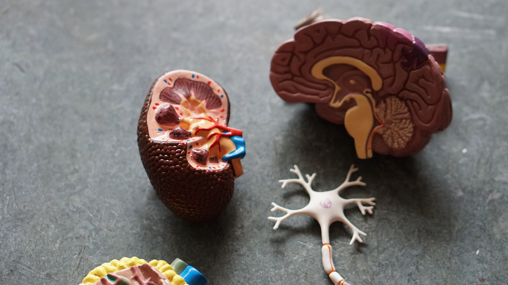

In my opinion, gods are another form of life who had the ability and hence created humans, animals etc maybe to increment their understanding of universe or for some other reasons(yet to be known if my theory isn't fallacious). Basically, this means that we are fully automated robots in god's perspective. This could perhaps explain our origins and maybe this is all a loop. To make points more clear, I assert that some day, humans will create a new race constituted by fully automated robots, leading to civil war and finally forcing us to push them onto a seperate planet where they can grow and evolve without any external interfearence and this becomes a loop. And if this is going to happen, I want myself to be placed in among those notable people who are going to make that happen. Well, it might look devastating, but i urge you to fathom the hidden positive effects.

This fantasy of mine has led me to join the world's quest in finding that secret learning algorithm, the algorithm that helps us learn anything(see, hear, think ...) i.e. the algorithm our brain boastingly weilds. MIT has recently published an article(link) explaing the stunning outcomes from it's experiments on brain. The algorithm that help us to hear can also helps us to see. This forms an hypothesis for the research and scientific engineering I will lavishly indulge in ! I had left IIT Indore CSE(despite achieving air 930 in JEE advanced) for IIIT-H, cause IIIT-H is one of it's kind in providing best AI course at B-tech level. I had lower confidence in math(though I used to love math a lot) back in my 12th grade and believe me it's only for this reason, I took an year off and worked on it until I gained enough confidence which is more than sufficient for me to believe in the fact that I am really good and can learn anything in math even in future. I am just trying to strongly assert that I will go to any extent to make my dream of automation come true.